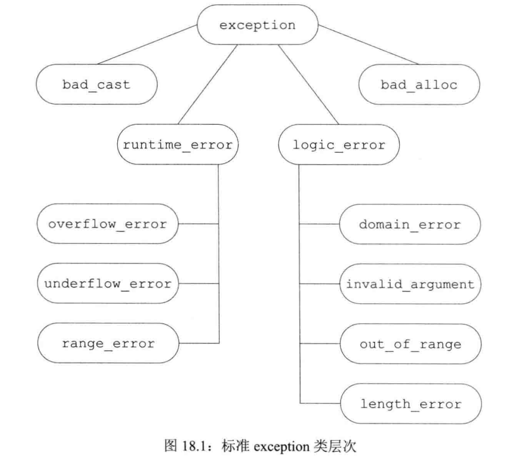

总说：
不泄漏任何资源；——通过资源管理类的方式：用自定义类封装锁之类的资源；用智能指针
不允许数据败坏——
基本承诺：
异常被抛出时程序内的所有事物仍然保持在有效的状态下，没有任何数据结构遭到破坏
程序的现实状态可以出错，如抛出异常就难以拥有之前定好的背景图等业务类的东西
强烈保证：成功便罢，如果失败就回复到函数调用前的状态——copy and swap：为打算修改的对象做出一份副本，然后在副本上做必要的修改，待完全成功再置换
不抛掷异常
检验发生throw操作的函数
决定throw操作是否发生在try区段内
throw表达式：
throw关键字后紧随一个表达式，其中表达式的类型就是抛出的异常类型；
如果抛出一个空的异常，是捕获不到的。
当执行一个throw时，跟在throw后面的语句将不再执行，程序的控制权从throw转移到与之匹配的catch模块，有两个重要含义：
如果没有找到catch的子句，程序将调用标准库函数terminate终止程序
重新抛出：
异常对象：
编译器使用异常抛出表达式来对异常对象进行拷贝初始化，因此throw语句中的表达式必须要有完全类型，如果该表达式是类类型的话则相应的类必须拥有一个可访问的析构函数和一个可访问的拷贝构造或移动构造；如果该表达式是数组类型或函数类型，则表达式将被转换成与之对应的指针类型；
异常对象位于编译器管理的空间中（到底在堆上还是栈上），编译器最终无论调用哪个catch子句都能访问该空间，当异常处理完后异常对象被销毁。如同从函数中返回指向局部对象的指针，抛出一个指向局部对象的指针也是错误的行为
当抛出一条表达式时，该表达式的静态编译类型决定了异常对象的类型，如果一条throw表达式解引用一个基类指针，而该指针实际指向的是派生类对象，则抛出的对象将被切割掉一部分，只有基类部分被抛出
坑：
try……catch语句：
catch子句：
catch参数：
catch语句是按照出现的顺序逐一匹配，所以越是专门的catch越应该置于整个catch列表的前端
catch捕获异常并处理完之后不同于throw后面的语句不执行，catch所在的函数会正常走完
可以通过只写一个throw不包含任何表达式在一条catch子句中重新抛出异常，将当前的异常对象沿着调用链向上传递；如果catch子句改变了参数的内容，则只有当catch异常声明是引用类型时对参数所做的改变才会被保留并继续传播，注意：只是在继续传播的时候改变了参数值，throw出来的对象值并没有做任何改变。如下
catch(my_error &eObj) { eObj.status = errCodes::serverErr; throw; } // 修改了异常对象
catch(other_error eObj) { eObj.status = errCodes::badErr; throw; } // 异常对象的status成员并没有改变
noexcept：跟在函数的参数列表后面，指定某个函数不会抛出异常
跟在函数参数列表后面时是异常说明符；
必须要出现在该函数的所有定义和声明语句之后
可以在函数指针的声明与定义中指定noexpect
在typedef和类型别名中则不能出现
在类的成员函数中noexcept说明符需要在const及引用限定符之后，而在final，ovriride或虚函数的=0之前
接受一个可选的实参，是个常量表达式，该实参必须可转换为bool类型，如果实参是true则不会抛出异常，如果是false则函数可能抛出异常。在C++11之前使用throw()——有啥实质性区别
运算符：一元运算符，返回值是一个bool的右值常量表达式，用于表示给定的表达式会不会抛出异常，经常与noexcept说明符混合使用，例如：
void f() noexcept(noexcept(g())); // f和g的异常说明一致
noexcept说明符使用场景：
仍然抛出异常的情况：
构造/析构与异常：聚焦点是构造时抛出异常后不会调用析构，已申请的资源怎样释放
Blob::Blob(int x) try: data(x)
{ /* 函数体 */ }
catch(const std::bad_allco &e)
{ handle_out_of_memory(e); }
标准异常类：
exception仅仅定义了拷贝构造函数/拷贝赋值运算符，虚析构，和一个名为what的虚成员：const char* what()，一般输出异常信息，如果是自定义的异常类，把要输出的异常信息传给父类构造，通过该函数可以输出。该成员确保不会抛出任何异常
exception，bad_cast和bad_alloc定义了默认构造
runtime_error和logic_error没有默认构造，担忧一个可接受c风格字符串或string类型实参的构造

标准异常类 | 描述 | 头文件 |
exception | 最通用的异常类，只报告异常的发生而不提供任何额外的信息 | exception |
runtime_error | 只有在运行时才能检测出的错误 | stdexcept |
rang_error | 运行时错误：产生了超出有意义值域范围的结果 | stdexcept |
overflow_error | 运行时错误：计算上溢 | stdexcept |
underflow_error | 运行时错误：计算下溢 | stdexcept |
logic_error | 程序逻辑错误 | stdexcept |
domain_error | 逻辑错误：参数对应的结果值不存在 | stdexcept |
invalid_argument | 逻辑错误：无效参数 | stdexcept |
length_error | 逻辑错误：试图创建一个超出该类型最大长度的对象 | stdexcept |
out_of_range | 逻辑错误：使用一个超出有效范围的值 | stdexcept |
bad_alloc | 内存动态分配错误 | new |
bad_cast | dynamic_cast类型转换出错 | type_info |
问题汇总：
数组越界没有异常，因为它不会抛出异常
abort：结束程序